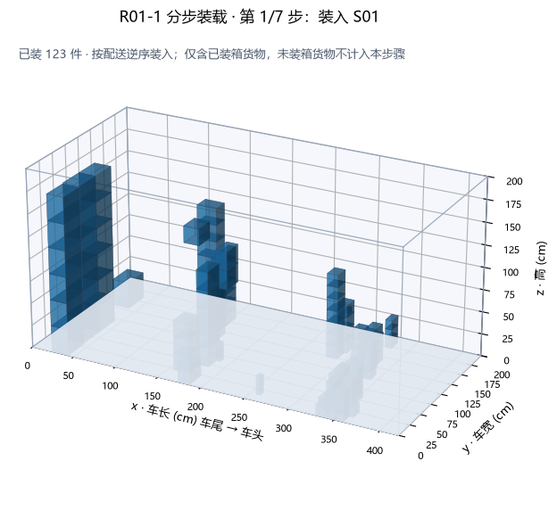
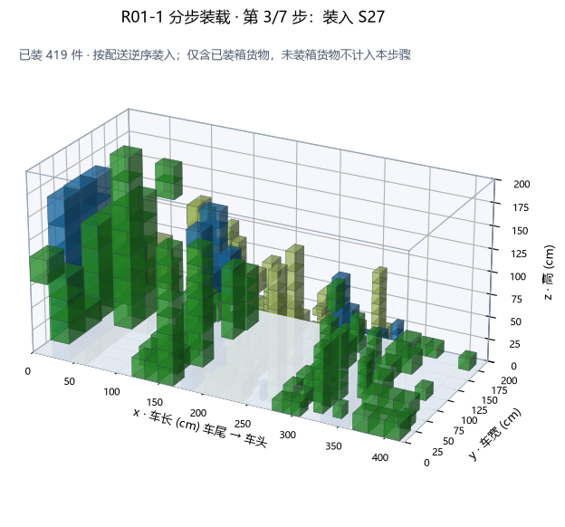
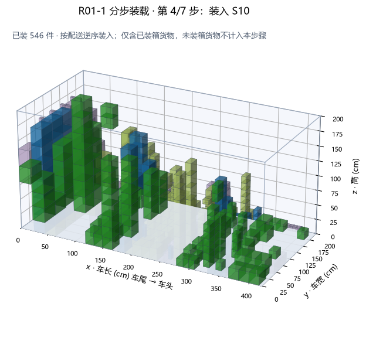
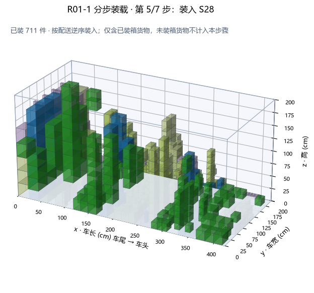
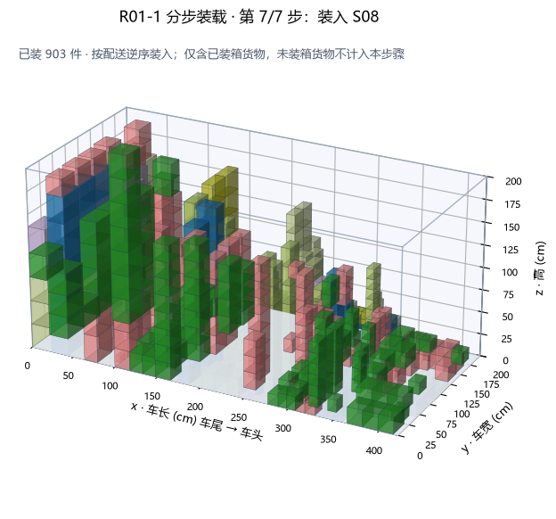

车辆 1 · R01-1车型 V01
第 1 步：将 S01（连锁药店01）的 123 件货物装入车厢最内侧靠车头位置，该门店最后送达，故最先装载。
第 2 步：将 S05（连锁药店05）的 136 件货物装入紧靠前批货物的外侧位置。
第 3 步：将 S27（连锁药店27）的 160 件货物装入紧靠前批货物的外侧位置。
第 4 步：将 S10（连锁药店10）的 127 件货物装入紧靠前批货物的外侧位置。
第 5 步：将 S28（连锁药店28）的 165 件货物装入紧靠前批货物的外侧位置。
第 6 步：将 S17（连锁药店17）的 47 件货物装入紧靠前批货物的外侧位置。
第 7 步：将 S08（连锁药店08）的 145 件货物装入车厢门口（车尾）位置，该门店最先送达（预计 08:18 到达），故最后装载。
装载提醒（共 36 条）：
1. S05 的货物被后送门店 S01 的货物阻挡（上下压，9 对）；需调整装箱或在卸货时搬移，不能保证无翻箱卸货。
2. S05 的货物被后送门店 S01 的货物阻挡（车尾通道，487 对）；需调整装箱或在卸货时搬移，不能保证无翻箱卸货。
3. S08 的货物被后送门店 S01 的货物阻挡（上下压，6 对）；需调整装箱或在卸货时搬移，不能保证无翻箱卸货。
4. S08 的货物被后送门店 S01 的货物阻挡（车尾通道，458 对）；需调整装箱或在卸货时搬移，不能保证无翻箱卸货。
5. S08 的货物被后送门店 S05 的货物阻挡（上下压，12 对）；需调整装箱或在卸货时搬移，不能保证无翻箱卸货。
6. S08 的货物被后送门店 S05 的货物阻挡（车尾通道，693 对）；需调整装箱或在卸货时搬移，不能保证无翻箱卸货。
7. S08 的货物被后送门店 S10 的货物阻挡（上下压，24 对）；需调整装箱或在卸货时搬移，不能保证无翻箱卸货。
8. S08 的货物被后送门店 S10 的货物阻挡（车尾通道，422 对）；需调整装箱或在卸货时搬移，不能保证无翻箱卸货。
9. S08 的货物被后送门店 S17 的货物阻挡（车尾通道，114 对）；需调整装箱或在卸货时搬移，不能保证无翻箱卸货。
10. S08 的货物被后送门店 S27 的货物阻挡（上下压，32 对）；需调整装箱或在卸货时搬移，不能保证无翻箱卸货。
11. S08 的货物被后送门店 S27 的货物阻挡（车尾通道，675 对）；需调整装箱或在卸货时搬移，不能保证无翻箱卸货。
12. S08 的货物被后送门店 S28 的货物阻挡（上下压，7 对）；需调整装箱或在卸货时搬移，不能保证无翻箱卸货。
13. S08 的货物被后送门店 S28 的货物阻挡（车尾通道，567 对）；需调整装箱或在卸货时搬移，不能保证无翻箱卸货。
14. S10 的货物被后送门店 S01 的货物阻挡（上下压，3 对）；需调整装箱或在卸货时搬移，不能保证无翻箱卸货。
15. S10 的货物被后送门店 S01 的货物阻挡（车尾通道，258 对）；需调整装箱或在卸货时搬移，不能保证无翻箱卸货。
16. S10 的货物被后送门店 S05 的货物阻挡（车尾通道，452 对）；需调整装箱或在卸货时搬移，不能保证无翻箱卸货。
17. S10 的货物被后送门店 S27 的货物阻挡（上下压，31 对）；需调整装箱或在卸货时搬移，不能保证无翻箱卸货。
18. S10 的货物被后送门店 S27 的货物阻挡（车尾通道，527 对）；需调整装箱或在卸货时搬移，不能保证无翻箱卸货。
19. S17 的货物被后送门店 S01 的货物阻挡（车尾通道，63 对）；需调整装箱或在卸货时搬移，不能保证无翻箱卸货。
20. S17 的货物被后送门店 S05 的货物阻挡（车尾通道，182 对）；需调整装箱或在卸货时搬移，不能保证无翻箱卸货。
21. S17 的货物被后送门店 S10 的货物阻挡（上下压，1 对）；需调整装箱或在卸货时搬移，不能保证无翻箱卸货。
22. S17 的货物被后送门店 S10 的货物阻挡（车尾通道，189 对）；需调整装箱或在卸货时搬移，不能保证无翻箱卸货。
23. S17 的货物被后送门店 S27 的货物阻挡（上下压，6 对）；需调整装箱或在卸货时搬移，不能保证无翻箱卸货。
24. S17 的货物被后送门店 S27 的货物阻挡（车尾通道，320 对）；需调整装箱或在卸货时搬移，不能保证无翻箱卸货。
25. S17 的货物被后送门店 S28 的货物阻挡（上下压，6 对）；需调整装箱或在卸货时搬移，不能保证无翻箱卸货。
26. S17 的货物被后送门店 S28 的货物阻挡（车尾通道，181 对）；需调整装箱或在卸货时搬移，不能保证无翻箱卸货。
27. S27 的货物被后送门店 S01 的货物阻挡（车尾通道，357 对）；需调整装箱或在卸货时搬移，不能保证无翻箱卸货。
28. S27 的货物被后送门店 S05 的货物阻挡（上下压，10 对）；需调整装箱或在卸货时搬移，不能保证无翻箱卸货。
29. S27 的货物被后送门店 S05 的货物阻挡（车尾通道，684 对）；需调整装箱或在卸货时搬移，不能保证无翻箱卸货。
30. S28 的货物被后送门店 S01 的货物阻挡（车尾通道，374 对）；需调整装箱或在卸货时搬移，不能保证无翻箱卸货。
31. S28 的货物被后送门店 S05 的货物阻挡（上下压，3 对）；需调整装箱或在卸货时搬移，不能保证无翻箱卸货。
32. S28 的货物被后送门店 S05 的货物阻挡（车尾通道，682 对）；需调整装箱或在卸货时搬移，不能保证无翻箱卸货。
33. S28 的货物被后送门店 S10 的货物阻挡（上下压，9 对）；需调整装箱或在卸货时搬移，不能保证无翻箱卸货。
34. S28 的货物被后送门店 S10 的货物阻挡（车尾通道，371 对）；需调整装箱或在卸货时搬移，不能保证无翻箱卸货。
35. S28 的货物被后送门店 S27 的货物阻挡（上下压，5 对）；需调整装箱或在卸货时搬移，不能保证无翻箱卸货。
36. S28 的货物被后送门店 S27 的货物阻挡（车尾通道，771 对）；需调整装箱或在卸货时搬移，不能保证无翻箱卸货。
未装载 10 件，不包含在上述装载步骤中，需另行安排配送。




